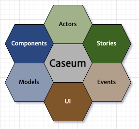
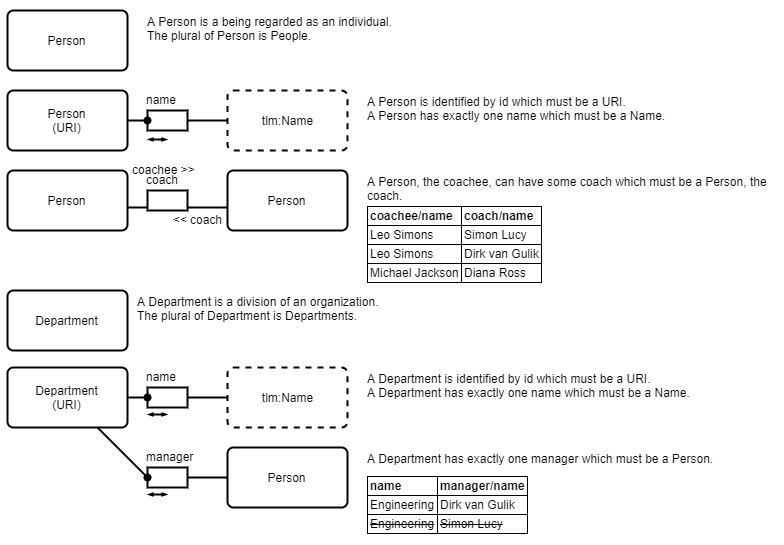

Caseum
Caseum is a simple approach to software architecture that combines multiple views to boost understanding and empathy across roles.
Video introduction
Multiple views
Caseum combines these views:
- Components using C4
- Actors using roles
- Stories using Gherkin
- Events using event storming
- UI using wireframes
- Models using TLM

Together these views fully describe a software system.
Not all projects need all views.
Lightweight approach
Caseum is for doing just enough architecture. It has three stages:
- whiteboarding & dialogue
- digital diagrams & decision records
- models as code & executable specifications
Not all projects need all stages.
See the guide on stages of architecture. See the guide on as-is and to-be designs for working on existing projects.
Recording decisions

Architecture records the important design decisions for a system. The records are for communicating with current and future people working on and with the software.
See the guide on recording decisions.
Tools

The primary tools used by Caseum are:
- Whiteboards, markers, and sticky notes
- Draw.io for digital diagrams
- Markdown text files for decision records
- Model specification in structured text formats (Structurizr C4, Gherkin, TLMD and AsyncAPI JSON)
See the guides on whiteboarding architecture and on using draw.io for architecture.
Different tools are available per view per stage:
| Whiteboarding & Dialogue |
Diagrams & Decision Records |
Models & Executable Specifications |
|
|---|---|---|---|
| Components | Boxes & lines | C4 Draw.io Library | C4 as Code |
| Actors | Roles & needs | Role Markdown Template | - |
| Stories | Goals & epics | User Story Markdown Template | Gherkin |
| Events | Event Storming | ES Draw.io Library | AsyncAPI |
| UI | Boxes & lines | Wireframes Draw.io Library | - |
| Models | Circles & lines | TLM Draw.io Library | TLMD |
License
 Caseum by Leo Simons is licensed under a Creative Commons Attribution 4.0 International License.
Caseum by Leo Simons is licensed under a Creative Commons Attribution 4.0 International License.
See LICENSE.txt for a plain text copy of the Creative Commons Attribution 4.0 International License.
Contributing
See CONTRIBUTING.md for details on how to contribute to Caseum.
Code of conduct
See Code of Conduct for details on how to participate in the Caseum community.